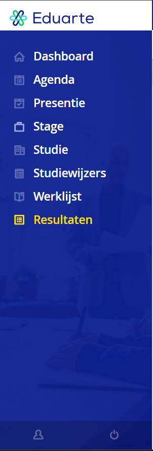
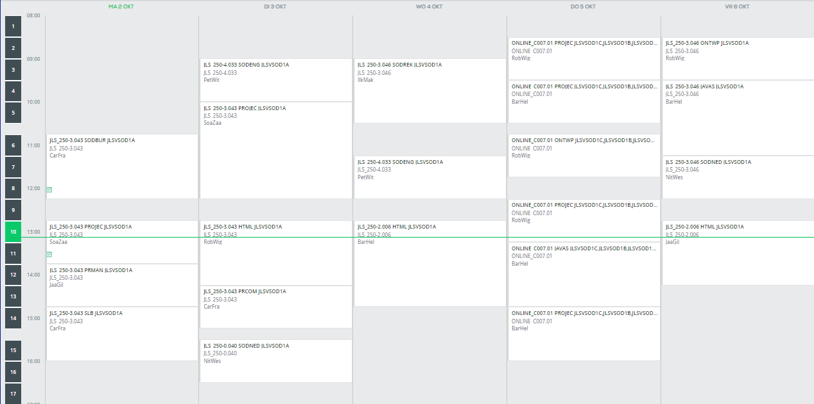
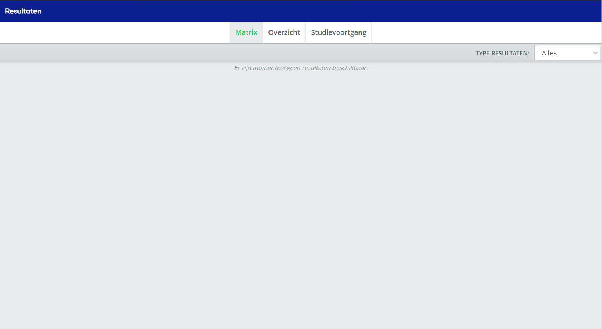
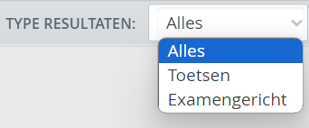
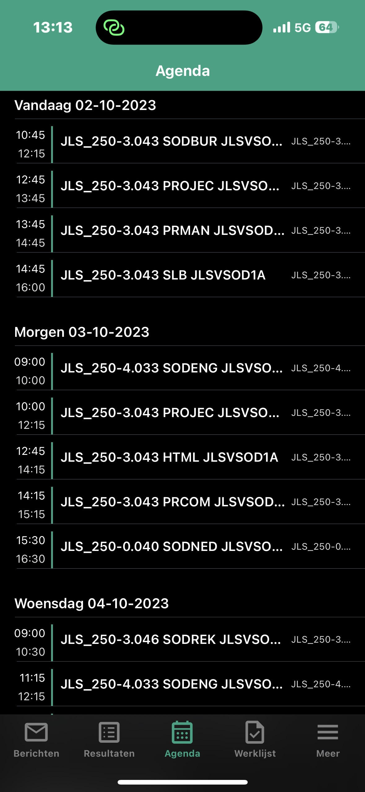

Dit is eduarte
deze pagina lees je alles over de app eduarte. Deze app gebruiken wij om onze cijfers, ons Rooster en onze aanwezigheid te zien. Wij hebben verschillende foto’s hieronder voor jullie neer gezet. Dan kunnen jullie zelf zien hoe de app er uit ziet. Wij hebben er natuurlijk ook wat uitleg bij gezet dat het voor u ook duidelijk is.

Eduarte menu: Hier links is het menu van eduarte. Dit zien wij gelijk als wij eduarte openen. Hiermee kunnen wij door eduarte navigeren. Hieronder staan de keuzes. En wat je er kan doen.
-Dashboard | Dit zie je als eerst. Je ziet hier over hoeveel minuten/uren je les hebt.
-Agenda | Hier zie je wat je rooster is en hoe laat je moet beginnen. En of je online les hebt.
-Presentie | Hier kan je zien hoeveel uur je aanwezig bent. Of hoeveel uur je ziek/afwezig bent.
-Stage | Hier zie je je stageplek. Hoeveel uur je nog moet maken. En of het al is afgerond.
-Studie | Bij studie kan je zien welke opleiding je hebt afgerond of met welke je nog bezig bent.
-Studiewijzers | Hier vind je alle informatie over alle opleidingen die beschikbaar zijn.
-Werklijst |
-Resultaten | Al je cijfers en examencijfers zijn hier te vinden.

Rooster: zie je ons rooster. Links in de balk staat de tijd.
En de vakken midden in de afbeelding zijn de vakken die wij hebben. Je kan hier zien in welk lokaal wij zitten. Dat zie je door te kijken naar JLS_250-3.043. Dat staat bij elk vak. Aan de laatste 4 cijfers zie je waar je ziet. Voorbeeld is 3.043 De 3 aan het begin staat voor de verdieping. En de 43 staat voor het lokaal nummer.
Je ziet ook een groene lijn door het beeld lopen. Je ziet dan hoe laat het nu is. Hier staat hij op 10 over 1.


Resultaten:Links zie je onze resultaten pagine. Bij de resultaten kan je je cijfers zien en je examencijfers. Nu hebben wij nog geen cijfers gekregen. Wij kunnen dus niet veel laten zien.
Rechts hebben we ook even een menutje gezet met de keuzen waar je tussen kan kiezen. Je hebt namelijk je normale cijfers. En voor als je examen doet heb je een apart vak voor de examen cijfers.

Eduarteapp: We hebben via onze telefoon
even een schermfoto gemaakt zodat jullie ook de eduarte app
op de telefoon kan zien. Die ziet er anders uit dan
de eduarte op de laptop of computer.
de app werkt bijna helemaal het zelfde.
Je ziet wel dat het rooster er anders uit ziet. Maar net als
hoe we net hebben uitgelegd over hoe je weet welk lokaal
je zit. Kan je dat hier op de zelfde manier kunnen zien.
En onder het rooster zie je weer een navigatiebalk. Deze heeft
de zelfde keuzes als het andere menu. Je kan hier dus Ook
hetzelfde doen.
De app is te installeren in de app store en de playstore. Iedereen
kan dus die app downloaden en gebruiken. Je logt in met je school gegevens.